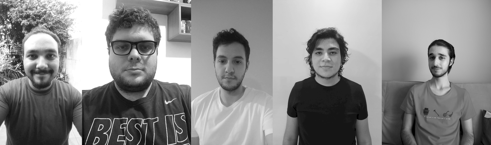
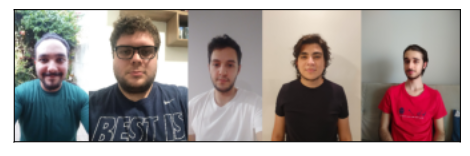
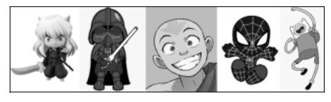
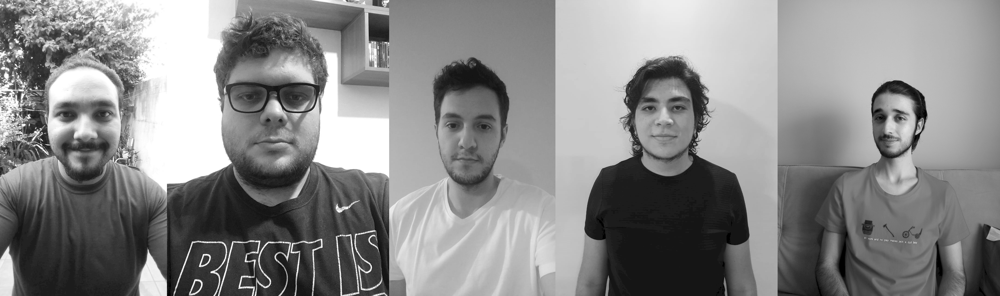
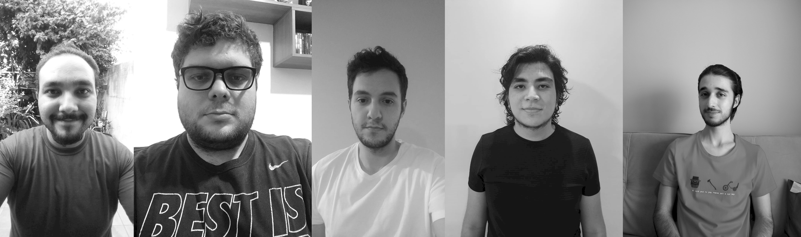

a) Apresentem as imagens originais e as versões em P&B delas
Foto Original do Grupo
Foto P&B do Grupo

Imagem Original dos Avatares
Imagem P&B dos Avatares
b) Apresentem as imagens com duas resoluções diferentes cada
Foto do Grupo Original Resolução (638 X 2156) 50%
Foto do Grupo Original Resolução (319 X 1078) 25%

Foto do Grupo P&BResolução (638 X 2156) 50%
Foto do Grupo P&BResolução (319 X 1078) 25%
Imagem Original dos Avatares Resolução (464 X 1692) 50%
Imagem Original dos Avatares Resolução (232 X 846) 25%
Imagem dos Avatares P&BResolução (464 X 1692) 50%
Imagem dos Avatares P&BResolução (232 X 846) 25%

c) Apresentem os vídeos com mudança de resolução, 25% e 50% dos originais
Vídeo Lento
Vídeo Lento 50%
Vídeo Lento 25%
Vídeo Rápido
Vídeo Rápido 50%
Vídeo Rápido 25%
d) Descrevam todos os procedimentos realizados / i)Áudio do Laboratório
 Foto P&B do Grupo

Imagem Original dos Avatares
Foto P&B do Grupo

Imagem Original dos Avatares